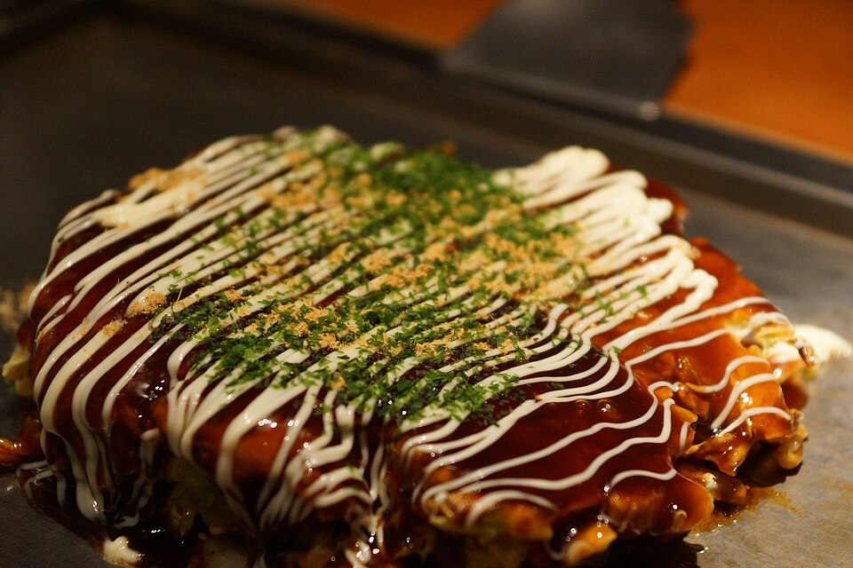

30 min · serves 2
Okonomiyaki
A crisp-edged, soft-centered cabbage pancake. Top generously and eat immediately.
Ingredients
- 2 cups shredded cabbage
- 3/4 cup flour, 1 egg, 1/2 cup dashi
- 2 strips bacon or mushrooms
- Okonomiyaki sauce, mayo, bonito flakes
Method
- Mix flour, egg, dashi, and cabbage into a thick batter.
- Pan-fry in oil until deeply golden on both sides.
- Add bacon on top during second side cooking.
- Finish with sauce, mayo, and bonito.